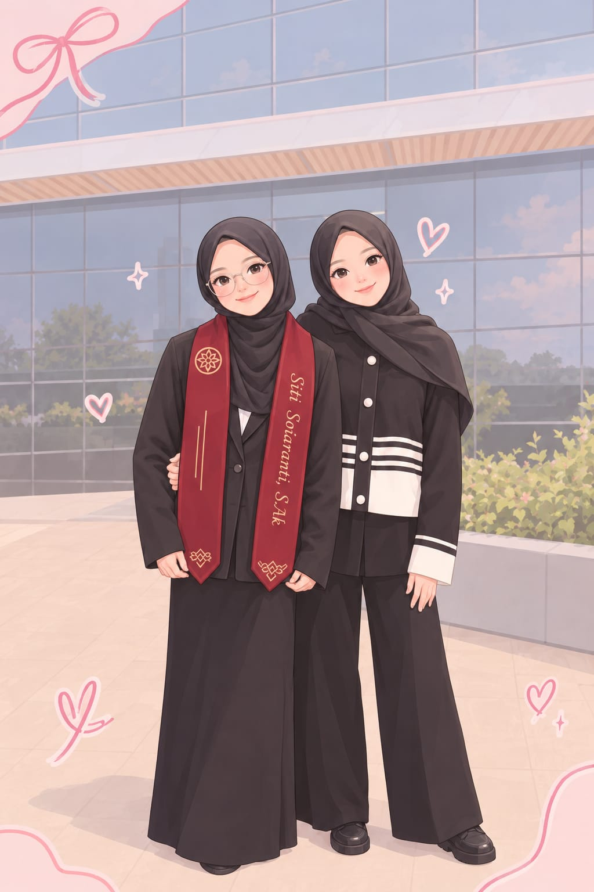

chapter one · how it began
Our Little Story
Dulu, kita hanya dua orang yang dipertemukan oleh sebuah momen sederhana. Tidak pernah terpikir bahwa dari pertemuan itu akan tumbuh cerita, tawa, obrolan, dan kedekatan yang begitu berarti.
Sampai akhirnya, Kakak bukan lagi sekadar seseorang yang aku kenal, tetapi menjadi sosok kakak yang punya tempat tersendiri di hati aku.